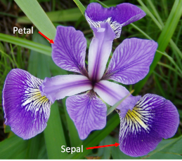
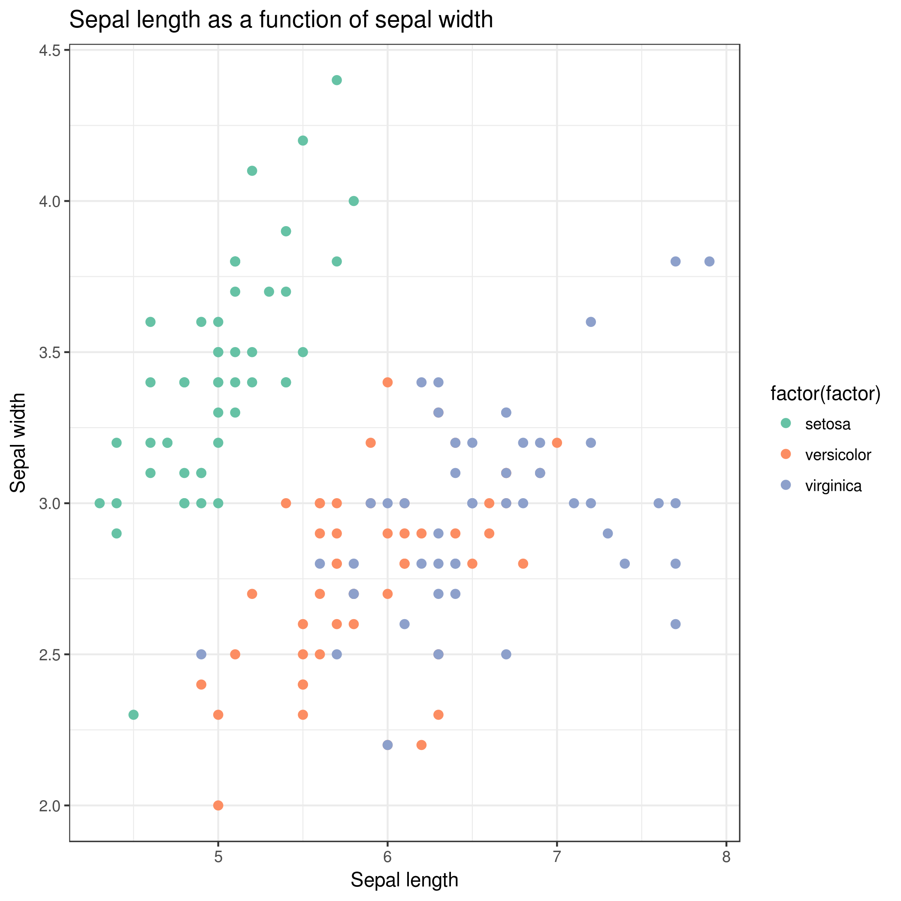

This practical aims at familiarizing you with the Galaxy user interface.
It will teach you how to perform basic tasks such as importing data, running tools, working with histories, creating workflows and sharing your work.
Not everyone has the same background and that’s ok!
comment Note: results may vary
Your results may be slightly different from the ones presented in this tutorial
due to differing versions of tools, reference data, external databases, or
because of stochastic processes in the algorithms.
The Iris flower data set, also known as Fisher’s or Anderson’s Iris data set, is a multivariate dataset introduced by the British statistician and biologist Ronald Fisher in his 1936 paper (Fisher 1936).
Each row of the table represents an iris flower sample, describing its species and the dimensions in centimeters of its botanical parts, the sepals and petals.
You can find more detailed information about this dataset on its dedicated Wikipedia page.
What does Galaxy look like?
hands_on Hands-on: Log in or register
Open your favorite browser (Chrome/Chromium, Safari or Firefox, but not Internet Explorer/Edge!)
Choose Login or Register from the navigation bar at the top of the page
If you have previously registered an account with this particular instance of Galaxy (user accounts are not shared between public servers!), proceed by logging in with your registered public name, or email address, and your password.
If you need to create a new account, click on Register here instead.
comment Different Galaxy servers
The particular Galaxy server that you are using may look slightly different than the one shown in this training.
Galaxy instance administrators can choose the exact version of Galaxy they would like to offer and can customize its look and feel to some extent.
The basic functionaity will be rather similar across instances, so don’t worry!
The Galaxy interface consists of three main parts:
The available tools are listed on the left
Your analysis history is recorded on the right
The central panel will let you run analyses and view outputs
Create a history
Galaxy allows you to create analysis histories. A history can be thought of as an electronic experimental lab book; it keeps track of all the tools and parameters you used in your analysis. From such a history, a workflow can be extracted; this workflow can be used to easily repeat the analysis on different data.
Think of a workflow as a cooking recipe with a list of ingredients (datasets) and a set of instructions
(pipeline of operations) that describes how to prepare or make something (such as a plot, or a new dataset).
The order of operations is important as very often the next operation takes as input the result of the previous operations. For instance, when baking
a cake, you would first sift the flour and then mix it with eggs as it would be impossible to sift the flour afterwards.
That is what we call a pipeline. To make a full meal, we may need to combine multiple recipes (pipelines) together.
The finalized pipelines can be generalized as a workflow. If we use cooking as an analogy, a workflow could represent an entire menu with all the recipes for each meal.
In other words, using a workflow makes it possible to apply the same procedure to a different dataset, just by changing the input.
hands_on Hands-on: Create history
Make sure you start from an empty analysis history.
tip Tip: Creating a new history
Click the new-history icon at the top of the history panel
If the new-history is missing:
Click on the galaxy-gear icon (History options) on the top of the history panel
Select the option Create New from the menu
Rename your history to be meaningful and easy to find. For instance, you can choose Galaxy 101 for everyone as the name of your new history.
tip Tip: Renaming a history
Click on Unnamed history (or the current name of the history) (Click to rename history) at the top of your history panel
Type the new name
Press Enter
Upload the Iris dataset
hands_on Hands-on: Data upload
ImportTool: upload1 the file iris.csv from Zenodo or from the data library (ask your instructor)
https://zenodo.org/record/1319069/files/iris.csv
tip Tip: Importing data via links
Copy the link location
Open the Galaxy Upload Manager (galaxy-upload on the top-right of the tool panel)
Select Paste/Fetch Data
Paste the link into the text field
Press Start
Close the window
By default, Galaxy uses the URL as the name, so rename the files with a more useful name.
tip Tip: Importing data from a data library
As an alternative to uploading the data from a URL or your computer, the files may also have been made available from a shared data library:
Go into Shared data (top panel) then Data libraries
Find the correct folder (ask your instructor)
Select the desired files
Click on the To History button near the top and select as Datasets from the dropdown menu
In the pop-up window, select the history you want to import the files to (or create a new one)
Click on Import
Renamegalaxy-pencil the dataset to iris
tip Tip: Renaming a dataset
Click on the galaxy-pencilpencil icon for the dataset to edit its attributes
In the central panel, change the Name field
Click the Save button
Check the datatype
Click on the history item to expand it to get more information.
The datatype of the iris dataset should be csv.
Changegalaxy-pencil the datatype if it is different than csv.
Option 1: Datatypes can be autodetected
Option 2: Datatypes can be manually set
tip Tip: Detecting the datatype
Click on the galaxy-pencilpencil icon for the dataset to edit its attributes
In the central panel, click on the galaxy-chart-select-dataDatatypes tab on the top
Select datatypes
Click the Detect datatype button
tip Tip: Changing the datatype
Click on the galaxy-pencilpencil icon for the dataset to edit its attributes
In the central panel, click on the galaxy-chart-select-dataDatatypes tab on the top
Select csv
Click the Change datatype button
Add an #iris tag galaxy-tags to the dataset
tip Tip: Adding a tag
Click on the dataset
Click on galaxy-tagsEdit dataset tags
Add a tag starting with #
Tags starting with # will be automatically propagated to the outputs of tools using this dataset.
Check that the tag is appearing below the dataset name
Make sure the tag starts with a hash symbol (#), which will make the tag stick not only to this dataset, but also to any results derived from it.
This will help you make sense of your history.
Pre-processing
Often, one or more data pre-processing step(s) may be required to proceed with an analysis.
In our case, the tools we will use require tab-separated input data, and assume there is no header line. Since our data is comma-separated and has a header line, we will have to perform the following pre-processing steps to prepare it for the actual analysis:
Format conversion
Header removal
Convert format
First, we will convert the file from comma-separated to tab-separated format. Galaxy has built-in format converters we can use for this.
hands_on Hands-on: Converting dataset format
Convertgalaxy-pencil the CSV file (comma-separated values) to tabular format (tsv; tab-separated values)
tip Tip: Converting the file format
Click on the galaxy-pencilpencil icon for the dataset to edit its attributes
In the central panel, click on the galaxy-gearConvert tab on the top
Select Convert CSV to Tabular
Click the Convert datatype button
Renamegalaxy-pencil the resulting dataset to iris tabular
tip Tip: Renaming a dataset
Click on the galaxy-pencilpencil icon for the dataset to edit its attributes
In the central panel, change the Name field
Click the Save button
View the generated file by clicking on the galaxy-eye (eye) icon
question Question
How many header lines does our file have?
solution Solution
The file has one header line, it contains the column names.
Remove header
Now it is time to run your first tool! We saw in the previous step that our file has 1 header line. This line does not contain any data, but the names of each column. We will now remove that line from our file before moving on to our analysis.
comment Tip: Finding your tool
Different Galaxy servers may have tools available under different sections, therefore it is often useful to use the search bar at the top of the tool panel to find your tool.
Additionally different servers may have multiple, similarly named tools which accomplish similar functions. When following tutorials, you should use precisely the tools that they describe. For real analyses, however, you will need to search among the various options to find the one that works for you.
hands_on Hands-on: Removing header
Remove BeginningTool: Remove+beginning1 with the following parameters:
Remove first: 1 (to remove the first line only)
param-file“from”: select the iris tabular file from your history
Click Execute
comment Tip: search for the tool
Use the tools search box at the top of the tool panel to find Remove beginningtool.
Renamegalaxy-pencil the dataset to iris clean
tip Tip: Renaming a dataset
Click on the galaxy-pencilpencil icon for the dataset to edit its attributes
In the central panel, change the Name field
Click the Save button
Click on the new history item to expand it
question Questions
Which tags are present on this resulting dataset? (You may have to refresh the history panel to see the tags)
How many samples (lines) does our dataset contain?
solution Solution
The output of Remove beginningtool is also tagged with the label iris. Tags beginning with a hashtag (#) will propagate; they will appear on any datasets derived from your original tagged file.
There are 150 lines in our file (we can see this under the file name when we have expanded the history item). This means we have 150 samples.
Viewgalaxy-eye the contents of the resulting file.
You should see that the header line is now no longer present.
Data Analysis: What does the dataset contain?
Now we are going to inspect the dataset using simple tools in order to get used to the Galaxy interface and answer basic questions.
How many different species are in the dataset?
In order to answer this question, we will have to look at column 5 of our file, and count how many different values (species) appear there. There are several ways we could do this in Galaxy. One approach might be to first extract this column from the file, and then count how many unique lines the file contains. Let’s do it!
hands_on Hands-on: Extract species
CutTool: Cut1 columns from a table with the following parameters:
“Cut columns”: c5
“Delimited by”: Tab
param-file“From”: iris clean dataset
Renamegalaxy-pencil the dataset to iris species column
tip Tip: Renaming a dataset
Click on the galaxy-pencilpencil icon for the dataset to edit its attributes
In the central panel, change the Name field
Click the Save button
Viewgalaxy-eye the resulting file
UniqueTool: toolshed.g2.bx.psu.edu/repos/bgruening/text_processing/tp_sorted_uniq/1.1.0 occurrences of each record with the following parameters:
param-file“File to scan for unique values”: iris species column (the output from Cuttool)
Renamegalaxy-pencil the dataset to iris species
Viewgalaxy-eye the resulting file
question Questions
How many different species are in the dataset?
What are the different Iris species?
solution Solution
There are 3 species.
The 3 different Iris species are:
setosa
versicolor
virginica
Now we have our answer! There are 3 different Iris species in our file.
Like we mentioned before, there are often multiple ways to reach your answer in Galaxy. For example, we could have done this with just a single tool, Grouptool as well.
hands_on Exercise: Grouping dataset
Try answering this question (how many Iris species are in the file?) again, using a different approach:
Tool: Group data by a column and perform aggregate operation on other columns tool
Input dataset: iris clean dataset to answer the same question.
Did you get the same answer as before?
Renamegalaxy-pencil the dataset to iris species group
solution Solution
GroupTool: Grouping1 with the following parameters:
“Select data” select iris clean dataset
“Group by column”: Column: 5
This approach should give the same answer. There are often multiple ways to do a task in Galaxy, which way you choose is up to you!
How many samples by species are in the dataset?
Now that we know that there are 3 different species in our dataset, our next objective is determining how many samples of each species we have. To answer this, we need to look at column 5 again, but instead of just determining how many unique values there are, we need to count how many times each of them occurs.
You may have noticed there were more parameters in the Grouptool tool that we did not use. Let’s have a closer look and see if any of them might help us answer this question.
comment Tool Help
To find out more about how a tool works, look at the help text (below the Execute button).
Look at the tool help for the Grouptool. Do you see any parameters that could help answer this question?
Looking at the tool help for Grouptool, we see that we can also perform aggregate operations such as mean, median, sum, max, min, count (and more). Counting sounds just like what we need, let’s try it!
hands_on Hands-on: Grouping dataset and adding information
Re-rungalaxy-refresh the Grouptool with the following parameters:
param-file“Select data”: iris clean
param-select“Group by column”: Column: 5
param-repeat“Insert operation”
“Type”: Count
“On column”: Column: 1
tip Tip: Re-running a tool
Expand one of the output datasets of the tool (by clicking on it)
Click re-run galaxy-refresh the tool
This is useful if you want to run the tool again but with slightly different paramters, or if you just want to check which parameter setting you used.
Renamegalaxy-pencil the dataset to iris samples per species group
Viewgalaxy-eye the resulting file.
question Question
How many samples per species are in the dataset?
solution Solution
We have 50 samples per species:
1
2
setosa
50
versicolor
50
virginica
50
Analysis: How to differentiate the different Iris species?
Our objective is to find what distinguishes the different Iris species (Figure 1). We know that we have 3 species of iris flowers, with
50 samples for each:
setosa
versicolor
virginica
These species look very much alike as shown on the figure below.
Figure 1: Three species of Iris flowers (Image attributions: versicolor by Danielle Langlois licensed under CC BY-SA 3.0, retrieved from WikiMedia; virginica by Christer Johansson licensed under CC BY-SA 3.0, retrieved from WikiMedia; setosa by and used with permission of Sonja Keohane, retrieved from www.twofrog.com)
And our objective is to find out whether the features we have been given for each species can help us to highlight the differences between the 3 species.
In our dataset, we have the following features measured for each sample:
Petal length
Petal width
Sepal length
Sepal width
comment petal and sepal
The image below shows you what the terms sepal and petal mean.
Figure 2: Sepal and petal of Iris flowers
Generate summary and descriptive statistics with
hands_on Hands-on: Get the mean and sample standard deviation of Iris flower features
DatamashTool: toolshed.g2.bx.psu.edu/repos/iuc/datamash_ops/datamash_ops/1.1.0 with the following parameters:
param-repeat“Insert Operation to perform on each group”
“Type”: Mean
“On column”: c1
param-repeat“Insert Operation to perform on each group”
“Type”: Sample Standard deviation
“On column”: c1
param-repeat“Insert Operation to perform on each group”
“Type”: Mean
“On column”: c2
param-repeat“Insert Operation to perform on each group”
“Type”: Sample Standard deviation
“On column”: c2
param-repeat“Insert Operation to perform on each group”
“Type”: Mean
“On column”: c3
param-repeat“Insert Operation to perform on each group”
“Type”: Sample Standard deviation
“On column”: c3
param-repeat“Insert Operation to perform on each group”
“Type”: Mean
“On column”: c4
param-repeat“Insert Operation to perform on each group”
“Type”: Sample Standard deviation
“On column”: c4
Rename the dataset to iris summary and statistics
tip Tip: Renaming a dataset
Click on the galaxy-pencilpencil icon for the dataset to edit its attributes
In the central panel, change the Name field
Click the Save button
Viewgalaxy-eye the generated file
question Questions
Can we differentiate the different Iris flower species?
solution Solution
From the results, we can see that the average Iris setosa petal length is lower than 1.5 with a relatively small standard deviation (<0.2).
The same can be observed for Iris setosa petal widths. These numbers are much smaller (width and length) than Iris versicolor and Iris virginica petals.
We can then use these characteristics to differentiate Iris setosa from the two other species (I. versicolor and I. virginica). On the other hand,
we cannot easily differentiate Iris Versicolor from Iris Virginica. Further analysis is necessary.
Visualize Iris dataset features with two-dimensional scatterplots
Let’s visualize the Iris dataset to see how the features depend on each other, and
check whether we can spot any immediate patterns.
hands_on Hands-on: Plot iris feature pairs in two dimensions
Scatterplot w ggplot2Tool: toolshed.g2.bx.psu.edu/repos/iuc/ggplot2_point/ggplot2_point/2.2.1+galaxy1 with the following parameters:
param-file“Input tabular dataset”: iris clean
“Column to plot on x-axis”: 1
“Column to plot on y-axis”: 2
“Plot title”: Sepal length as a function of sepal width
“Label for x axis”: Sepal length
“Label for y axis”: Sepal width
In “Advanced Options”:
“Data point options”: User defined point options
“relative size of points”: 2.0
“Plotting multiple groups”: Plot multiple groups of data on one plot
“column differentiating the different groups”: 5
“Color schemes to differentiate your groups”: Set 2 - predefined color pallete
In “Output Options”:
Additional output format: PDF
Viewgalaxy-eye the resulting plot:

Rename the dataset to iris sepal scatterplot
question Questions
What does this scatter plot tell us about Iris species?
Make a new scatter plot, this time with Petal length versus Petal width.
Can we differentiate between the three Iris species?
tip Tip: Re-running the ggplot tool
Instead of clicking on Scatterplot w ggplot2tool again, it is possible to recall the previous scatterplot parameters by clicking on re-run button and updating the parameters we wish to modify.
hands_on Hands-on: Re-run the tool
Click on the galaxy-refresh icon (Run this job again) for the output dataset of Scatterplot w ggplot2tool
This brings up the tool interface in the central panel with the parameters set to the values used previously to generate this dataset.
solution Solution
We get similar results than with Summary and statistics: Iris setosa can clearly be distinguished from Iris versicolor and
Iris virginica. We can also see that sepal width and length are not sufficient features to differentiate Iris versicolor from Iris
virginica.
Scatterplot w ggplot2Tool: toolshed.g2.bx.psu.edu/repos/iuc/ggplot2_point/ggplot2_point/2.2.1+galaxy1 with the following parameters:
param-file“Input tabular dataset”: iris clean
“Column to plot on x-axis”: 3
“Column to plot on y-axis”: 4
“Plot title”: Petal length as a function of petal width
“Label for x axis”: Petal length
“Label for y axis”: Petal width
In “Advanced Options”:
“Data point options”: User defined point options
“relative size of points”: 2.0
“Plotting multiple groups”: Plot multiple groups of data on one plot
“column differentiating the different groups”: 5
“Color schemes to differentiate your groups”: Set 2 - predefined color pallete
Your new output dataset will look something like this:
We can better differentiate between the 3 Iris species but for some samples the petal length versus width is still insufficient
to differentiate Iris versicolor from Iris virginica. And as before, Iris setosa can easily be distinguished from the two other species.
Galaxy management
Convert your analysis history into a workflow
When you look carefully at your history, you can see that it contains all steps of our analysis, from the beginning to the end. By building this history we have actually built a complete record of our analysis with Galaxy preserving all parameter settings applied at every step. But when you receive new data, or a new report is requested, it would be tedious to do each step over again. Wouldn’t it be nice to just convert this history into a workflow that we will be able to execute again and again?
Galaxy makes this very easy with the Extract workflow option. This means any time you want to build a workflow, you can just perform the steps once manually, and then convert it to a workflow, so that next time it will be a lot less work to do the same analysis.
hands_on Hands-on: Extract workflow
Clean up your history.
If you had any failed jobs (red), please remove those datasets from your history by clicking on the x button.
This will make the creation of a workflow easier.
Go to the History Options menugalaxy-gear menu
Select the Extract Workflow option.
The central panel will change as shown below and you will be able to choose which steps to include/exclude and how to name the newly created workflow.
Rename the workflow to something descriptive
For example: Exploring Iris dataset with statistics and scatterplots.
If there are any steps that shouldn’t be included in the workflow, you can uncheck them.
Click on the Create Workflow button near the top.
You will get a message that the workflow was created. But where did it go?
Click on Workflow in the top menu of Galaxy.
Here you have a list of all your workflows.
Your newly created workflow should be listed at the top:
The workflow editor
comment Tip: Problems creating your workflow?
If you had problems extracting your workflow in the previous step, we provide a working copy for you here,
which you can import to Galaxy and use for the next sections (see below how to import a workflow to Galaxy).
tip Tip: Importing a workflow
Click on Workflow on the top menu bar of Galaxy. You will see a list of all your workflows.
Click on the upload icon galaxy-upload at the top-right of the screen
Provide your workflow
Option 1: Paste the URL of the workflow into the box labelled “Archived Workflow URL”
Option 2: Upload the workflow file in the box labelled “Archived Workflow File”
Click the Import workflow button
We can examine the workflow in Galaxy’s workflow editor. Here you can view/change the parameter settings of each step, add and remove tools, and connect an output from one tool to the input of another, all in an easy and graphical manner. You can also use this editor to build workflows from scratch.
hands_on Hands-on: Editing our workflow
Open the workflow editor
Click on the dropdown menu galaxy-dropdown (triangle icon) to the right of your workflow name.
Select Edit to launch the workflow editor.
You should see something like this:
When you click on a workflow step, you will get a view of all the parameter settings for that tool on the right-hand side of your screen (the Details section)
You can also change the parameter settings of your workflow here, and also do more advanced configuration.
Hiding intermediate outputs
We can tell Galaxy which outputs of a workflow are important and should be shown in our history when we run it, and which can be hidden.
By default, all outputs will be shown
Click the asterisk for outputs to mark them as important:
out_file in Uniquetool
out_file1 in Grouptool step
This should be the Group tool where we performed the counting, you can check which one that is by clicking on it and looking at the parameter settings in the Details box on the right.
png in both Scatterplot w ggplot2tool steps
Now, when we run the workflow, we will only see these final outputs
i.e. the two dataset with species, the dataset with number of samples by species and the two scatterplots.
tip Hiding intermediate steps
When a workflow is executed, the user is usually primarily interested in the final product and not in all intermediate steps. By default all the outputs of a workflow will be shown, but we can explicitly tell Galaxy which outputs to show and which to hide for a given workflow. This behaviour is controlled by the little checkbox in front of every output dataset:
Renaming output datasets
When we performed the analysis manually, we often renamed output datasets to something more meaningful
We can do the same in a workflow (see the tip box below)
Let’s rename the outputs we marked with an asterisk (and thus do not hide) to more meaningful names:
Uniquetool, output out_file: rename to categories tool
Grouptool, output out_file1: rename to samples per category
Rename the scatterplot outputs as well, remember to choose a generic name, since we can now also run this on data other than iris plants.
tip Tip: Renaming workflow outputs
Open the workflow editor
Click on the tool in the workflow to get the details of the tool on the right-hand side of the screen.
Scroll down to the Configure Output section of your desired parameter, and click it to expand it.
Under Rename dataset, give it a meaningful name
Save your workflow (important!) by clicking on the galaxy-save icon at the top right of the screen.
Return to the analysis view by clicking on Analyze Data at the top menu bar.
comment Comments
We could validate our newly built workflow by running it on the same input datasets that we used at the start of this tutorial, in order to make sure we do obtain the same results.
Run workflow on different data
Now that we have built our workflow, let’s use it on some different data. For example, let us explore the diamonds R dataset with it.
hands_on Hands-on: Create a new history and upload a new data
Create a new history and give it a name.
tip Tip: Creating a new history
Click the new-history icon at the top of the history panel
If the new-history is missing:
Click on the galaxy-gear icon (History options) on the top of the history panel
Select the option Create New from the menu
ImportTool: upload1 the file diamonds.csv from Zenodo or from the data library (ask your instructor)
Open the Galaxy Upload Manager (galaxy-upload on the top-right of the tool panel)
Select Paste/Fetch Data
Paste the link into the text field
Press Start
Close the window
By default, Galaxy uses the URL as the name, so rename the files with a more useful name.
tip Tip: Importing data from a data library
As an alternative to uploading the data from a URL or your computer, the files may also have been made available from a shared data library:
Go into Shared data (top panel) then Data libraries
Find the correct folder (ask your instructor)
Select the desired files
Click on the To History button near the top and select as Datasets from the dropdown menu
In the pop-up window, select the history you want to import the files to (or create a new one)
Click on Import
Renamegalaxy-pencil the dataset to diamonds
tip Tip: Renaming a dataset
Click on the galaxy-pencilpencil icon for the dataset to edit its attributes
In the central panel, change the Name field
Click the Save button
Add a propagating tag galaxy-tags (e.g. #diamonds)
tip Tip: Adding a tag
Click on the dataset
Click on galaxy-tagsEdit dataset tags
Add a tag starting with #
Tags starting with # will be automatically propagated to the outputs of tools using this dataset.
Check that the tag is appearing below the dataset name
The diamonds dataset comes from the well-known ggplot2 package developed by Hadley Wickham and was initially collected from the Diamond Search Engine in 2008.
The original dataset consists of 53940 specimen of diamonds, for which it lists the prices and various properties.
For this training, we have created a simpler dataset from the original, in which only the five columns relating to the price and the so-called 4 Cs (carat, cut, color and clarity) of diamond characteristics have been retained.
Carat refers to the weight of the diamond when measured on a scale
Cut refers to the quality of the cut and can take the grades Fair, Good, Very Good, Premium and Ideal
Color describes the overall tint, or lack thereof, of the diamond from colorless/white to yellow and is given on a letter scale ranging from D to Z (D being the best, known as colorless).
Clarity describes the amount and location of naturally occuring “inclusions” found in nearly all diamonds on a scale of eleven grades ranging from Flawless (the ideal situation) to I3 (Included level 3, the worst quality).
As a further simplification, our training dataset has the qualities in the color and clarity columns re-encoded as integer values (1-23 for color qualities D-Z, and 1-11 for the clarity levels from Flawless to I3).
With this adjustment, we can reuse our workflow on the data, and analyze and visualize it following the same steps as we took for the Iris dataset.
hands_on Hands-on: Run workflow
To analyze the diamonds price/4 Cs dataset by reusing our workflow:
Open the workflow menu (top menu bar).
Find the workflow you made in the previous section,
Select the option Run.
The central panel will change to allow you to configure and launch the workflow.
Select the diamonds dataset as the input dataset.
Customize the first scatter plot:
This step is preconfigured to plot column 1 along the x and column 2 along the y axis, while grouping by column 5.
This is fine and will result in price getting plotted against carat with grouping by cut, but you would want to adjust the plot title and axis labels accordingly:
Change “Plot title” to Diamond price as a function of carat with cut as a factor
Change “Label for x axis” to Weight of the diamond (carat)
Change “Label for y axis” to Price (US dollars)
Customize the second scatter plot.
This one is preconfigured to plot column 3 along the x and column 4 along the y axis, which, for our new data, would plot color as a function of clarity. However, we would rather want to stick to plotting price against weight in carat as in the first plot, but group by clarity instead of by cut this time, so:
Change “Column to plot on x-axis” to 1
Change “Column to plot on y-axis” to 2
Change “Plot title” to Diamond price as a function of carat with clarity as a factor
Change “Label for x axis” to Weight of the diamond (carat)
Change “Label for y axis” to Price (US dollars)
And finally in “Advanced Options” change “column differentiating the different groups” to 4 (clarity).
Click Run workflow.
Once the workflow has started, you will initially be able to see all its steps, but the unimportant intermediates will disappear after they complete successfully:
question Questions
How many cut category are there in the Diamond dataset ?
How many samples are there in each cut category ?
What do you notice about the relationship between price and carat ?
Based on the plot showing Price vs. Carat with Clarity as a factor, do you think clarity accounts for some of the variance in price? Why ?
solution Solution
There are 5 different cut categories:
Fair
Good
Ideal
Premium
Very Good
We have the following number of samples in each cut category:
1
2
Fair
1610
Good
4906
Ideal
21551
Premium
13791
Very Good
12082
Using any of the scatter plots we made, we can see an obvious positive (non-linear) relationship between both variables: as carat size increases, price also increases. There is also very clear discrete values that carat size takes on, which are those vertical strips on the graph.
Holding carat weight constant, we see on the scatter plot shown above that diamonds with lower clarity are almost always cheaper than diamonds with better clarity: diamonds that are “Internally Flawless” are the most expensive whereas “I1” are the least expensive clarity types. So clarity explains a lot of the variance found in price!
Share your work
One of the most important features of Galaxy comes at the end of an analysis. When you have published striking findings, it is important that other researchers are able to reproduce your in-silico experiment. Galaxy enables users to easily share their workflows and histories with others.
To share a history, click on the galaxy-gear icon in the history panel and select Share or Publish. On this page you can do 3 things:
Make History Accessible via Link. This generates a link that you can give out to others. Anybody with this link will be able to view your history.
Make History Accessible and Publish. This will not only create a link, but will also publish your history. This means your history will be listed under Shared Data → Histories in the top menu.
Share with a user. This will share the history only with specific users on the Galaxy instance.
comment Permissions
Different servers have different default permission settings. Some servers create all of your datasets completely private to you, while others make them accessible if you know the secret ID.
Be sure to select Also make all objects within the History accessible whenever you make a history accessible via link, otherwise whomever you send your link to might not be able to see your history.
hands_on Hands-on: Share history
Share your history with your neighbour.
Find the history shared by your neighbour. Histories shared with specific users can be accessed by those users under their top masthead “User” menu under Histories shared with me.
Conclusion
trophy Well done! You have just performed your first analysis in Galaxy. Additionally you can share your results and methods with others.
keypoints Key points
Galaxy provides an easy-to-use graphical user interface for often complex command-line tools
Galaxy keeps a full record of your analysis in a history
Workflows enable you to repeat your analysis on different data
Galaxy can connect to external sources for data import and visualization purposes
Galaxy provides ways to share your results and methods with others
 Anne Fouilloux,
Anne Fouilloux,  Nadia Goué,
Nadia Goué,  Christopher Barnett,
Christopher Barnett,  Michele Maroni,
Michele Maroni,  Olha Nahorna,
Olha Nahorna,  Dave Clements,
Dave Clements,  Saskia Hiltemann
Saskia Hiltemann


{kind=link}
{kind=link}
{kind=link}